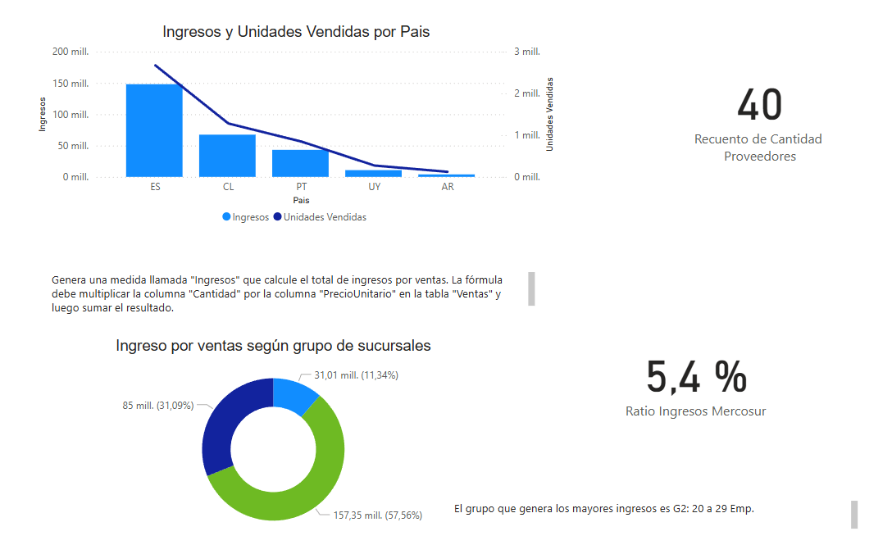

Dashboard de Datos
Este proyecto se enfoca en el modelado, depuración y análisis de un conjunto de datos transaccionales dentro del entorno de Power BI. El trabajo se centró en transformar grandes volúmenes de información bruta en insights visuales accesibles y accionables.
- Modelado del conjunto de datos en Power Query sin uso de DAX.
- Visualización de ventas, proveedores, productos y sucursales.
- Procesamiento de más de 1.3 millones de registros.

Información del Producto
Esta visualización permite explorar el volumen, costo y origen de los productos ofrecidos por distintos proveedores. A través de gráficos se identifican patrones útiles para decisiones de stock y abastecimiento.

Rendimiento Comercial
Vista integrada de los productos más vendidos, facturación por país, ingresos por sucursal, y métricas clave como impacto en el Mercosur. Todo optimizado para lectura estratégica.
